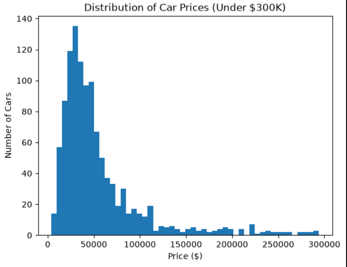
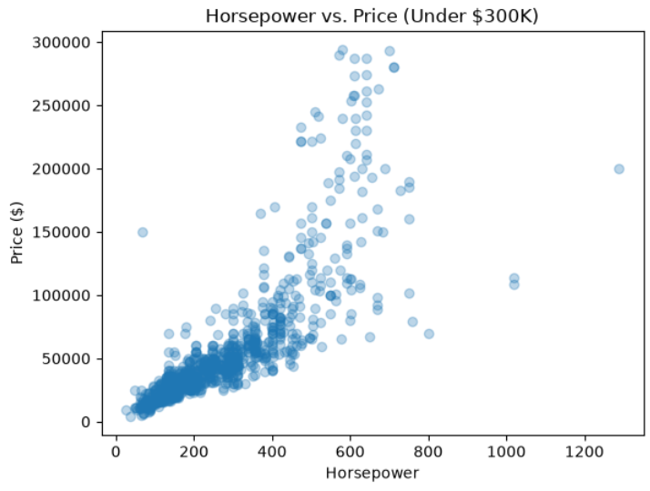
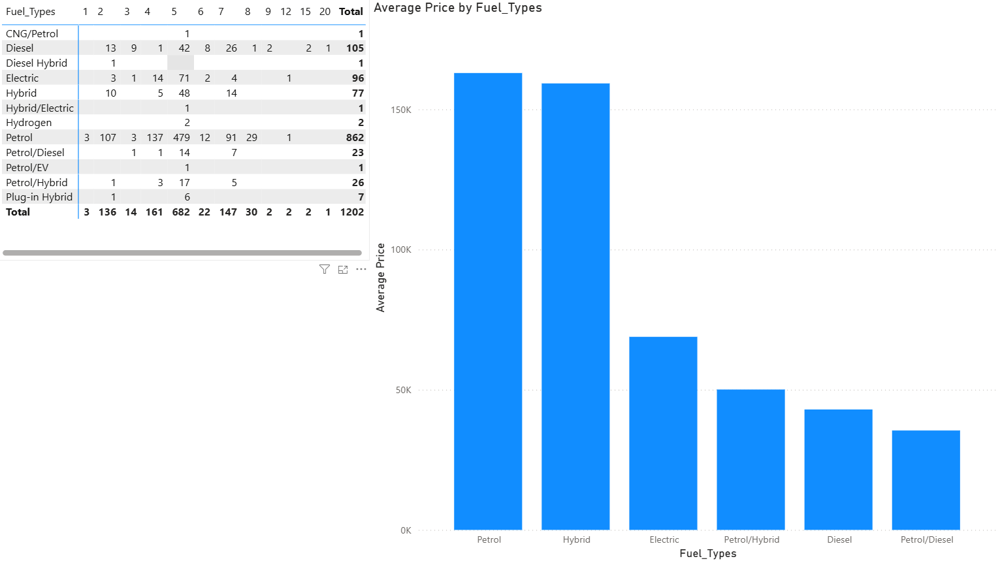
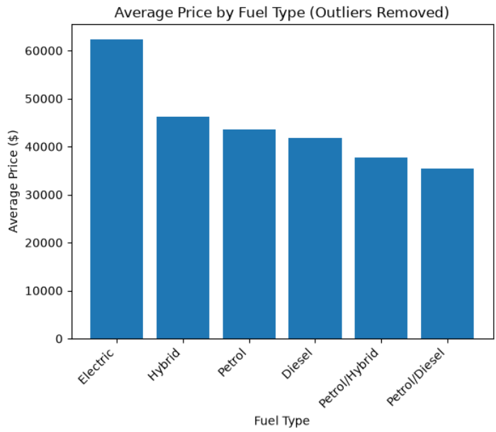

I turn messy, real-world data into decisions — cleaning it in Excel, querying it in SQL, exploring it in Python, and putting it in front of people through Power BI dashboards they can actually use.
A single dataset of 1,200+ global vehicles, taken from raw and inconsistent through four tools in sequence — answering three questions about market segmentation, performance, and value.
The dataset's average price is more than 3x its median — a handful of hypercars skew every mean-based comparison.
Electric vehicles deliver roughly double the horsepower per dollar of petrol vehicles.
A McLaren mislabeled as BMW survived Excel, SQL, and Python — caught only once brand-level results stopped lining up in Power BI.



